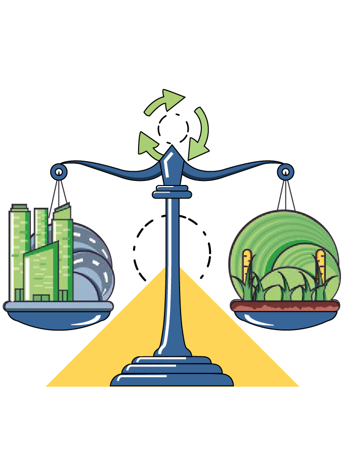
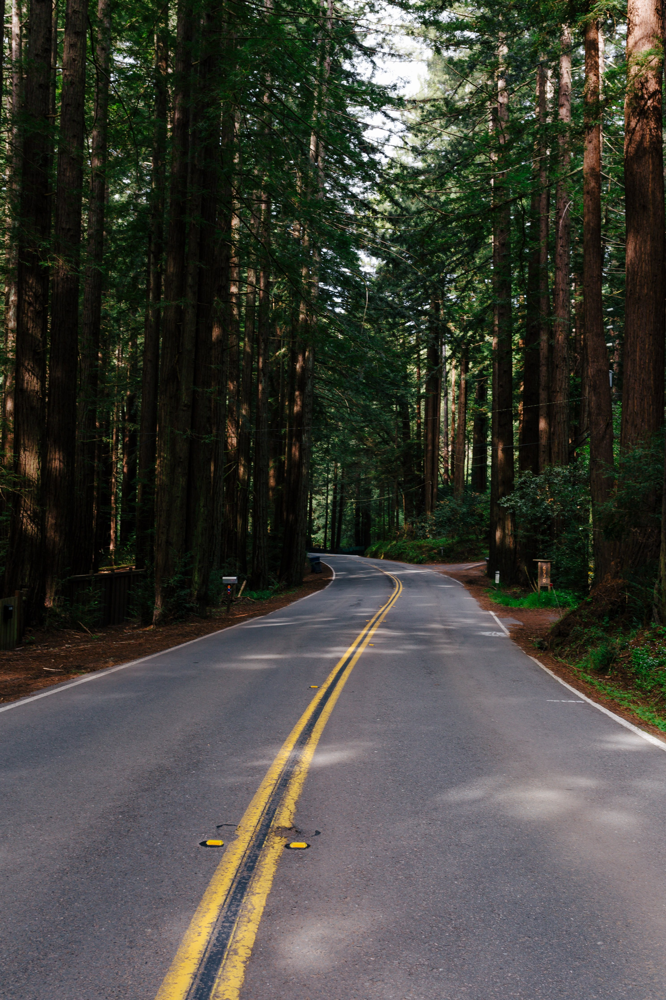
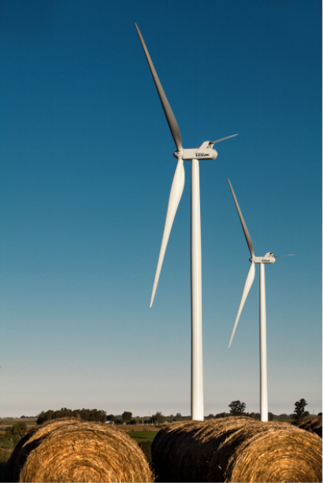
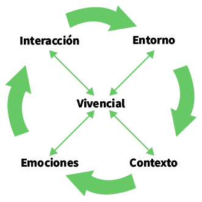

Escuela Virtual de
Sostenibilidad Empresarial
¿Qué pasara mañana, en unos meses o quizas años?
| vivimos en un mundo lleno de incertidumbres, que requieren una preparación constante, es tiempo de pensar no solo en las necesidades presentes, sino en las futuras, de tal manera que se garantice un equilibrio entre el crecimiento tanto económico como social, cuidando los recursos naturales y el bienestar de las comunidades |  |
|  | ¡Es ahora o nunca! la decisión... Un aprendizaje continuo y experiencial que nos fortalezca como comunidad |
Transformando el camino de la Educación
|
La Escuela Virtual de Sostenibilidad Empresarial surge con el proposito de despertar en el mundo de los negocios el sentido humano y social. |
|
Es por ello que integramos un aprendizaje diferente, dejando de lado la individualidad y la competencia, involucrando la empatia, con el fin de prepararnos para enfrentar las incertidumbres y lograr una sinergia entre las comunidades para una permanente busqueda del desarrollo sostenible. |
Involucrando el sentir humano como fuerza motora que despierte el interés por el crecimiento personal y el espíritu de lucha ante el mundo cotidiano con sus incertidumbres que conduzca a la empatía.
Socializando las vivencias cotidianas de tal manera que se conviertan en insumo de conocimiento y reflexión para todos los participantes con miras a generar sinergias e incentivar el involucramiento para lograr la sustentabilidad empresarial.
Nuestro Modelo Educativo |
|
|  |
Por lo tanto es:
Basado en la:
Apoyando el:
|
Metodología

Una de las grandes ventajas de la era actual, es el acceso permanente al aprendizaje; por lo tanto, nos olvidamos de las metodologías tradicionales para dar apertura a los cambios e innovaciones permanentes, en donde los participantes cuenten con la flexibilidad de tiempo y espacio en el proceso de apropiación de nuevos conocimientos. El ambiente de aprendizaje lo construye el mismo estudiante de acuerdo a sus gustos, preferencias y comodidades.
Nuestros Programas
1 |
||||||
4 |
Presiona los círculos para conocer cada uno de nuestros programas |
Resiliencia Corporativa y PersonalNuestra capacidad de reacción ante las incertidumbres. El capital humano en las organizaciones |
InnovaciónDespertando nuestra creatividad en creación y cambios de procesos |
Transformación digitalComo manejar el involucramiento empresarial |
Redes de colaboraciónLa sostenibilidad empresarial en procesos colaborativos |
2 |
3 |